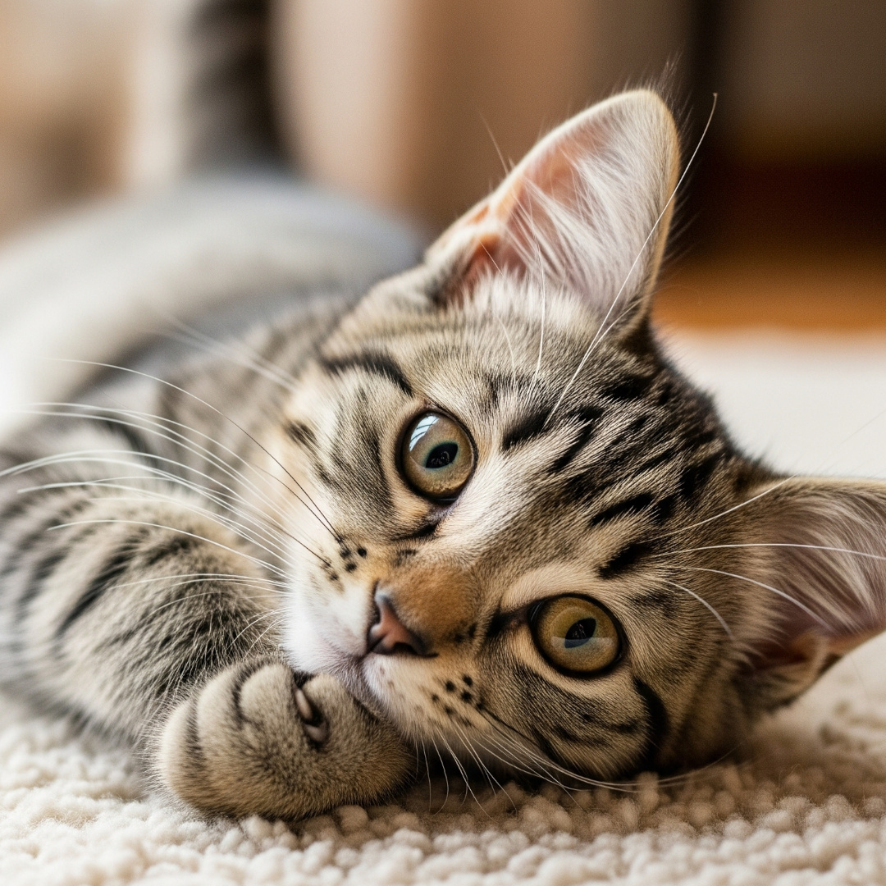

O Fascinante Mundo da Comunicação Felina: Quando o Silêncio Fala Mais Alto

Quando o gato parece te ignorar…
Você já passou por aquela situação familiar? Chama seu gato pelo nome, faz aqueles ruídos carinhosos que sempre funcionavam, e ele... simplesmente continua lambendo a pata como se você fosse invisível. Nenhum movimento de orelha, nenhum olhar de reconhecimento, apenas o som rítmico da língua áspera contra o pelo. Se isso já aconteceu com você, saiba que você não está sozinho — e, mais importante, seu gato não está sendo rude.
A Ciência por Trás do "Desdém" Felino
O Que Realmente Acontece no Cérebro do Gato
Pesquisas recentes em neurociência veterinária revelam que os gatos processam informações sociais de forma fundamentalmente diferente dos cães. Enquanto os cães foram domesticados para responder imediatamente aos comandos humanos, os gatos mantiveram muito de sua natureza selvagem, incluindo a capacidade de avaliar situações antes de agir.
Um estudo publicado na revista Animal Cognition em 2020 mostrou que gatos domésticos reconhecem não apenas a voz de seus tutores, mas também conseguem distinguir entre diferentes tons emocionais. O interessante é que, mesmo reconhecendo, eles escolhem quando e como responder — uma habilidade que demonstra inteligência social sofisticada, não indiferença.
A Linguagem Corporal Sutil
O que muitos tutores interpretam como "ignorar" é, na verdade, uma forma complexa de comunicação. Observe com atenção da próxima vez:
- Movimentos de orelha: Mesmo sem virar a cabeça, as orelhas do seu gato podem se mover ligeiramente em sua direção quando você fala. Isso indica que ele está registrando sua presença e voz.
- Contração de músculos: Olhe para a base da cauda e os músculos das costas. Frequentemente, há uma tensão sutil que mostra que o gato está ciente do que acontece ao redor.
- Padrão de respiração: Gatos relaxados têm uma respiração mais lenta e profunda. Se a respiração se altera quando você fala, ele definitivamente está te ouvindo.
A Evolução do Relacionamento Gato-Humano
Como os Gatos Se Tornaram "Seletivamente Sociais"
Ao contrário dos cães, que evoluíram ao lado dos humanos por milhares de anos como parceiros de trabalho, os gatos se aproximaram de nós por conveniência mútua. Eles descobriram que nossos assentamentos atraíam roedores — sua presa favorita — enquanto nós percebemos que eles eram excelentes controladores de pragas.
Essa relação mais "empresarial" resultou em uma forma única de domesticação. Os gatos mantiveram sua autonomia e estrutura social original, onde a comunicação é mais sutil e a resposta nem sempre é imediata.
O Conceito de "Amor Felino"
Dr. John Bradshaw, especialista em comportamento animal da Universidade de Bristol, explica que os gatos demonstram afeto de forma diferente dos humanos. Para eles, a presença constante e a vigilância não são necessárias em relacionamentos seguros. Na verdade, a capacidade de "ignorar" você pode ser o maior complimento felino — significa que ele confia tanto em você que não precisa monitorar constantemente seus movimentos.
Decifrando os Verdadeiros Sinais de Afeto
Quando o Silêncio É Golden
- Dormir próximo a você: Se seu gato escolhe dormir no mesmo cômodo, mesmo que não no seu colo, isso é um sinal poderoso de confiança e afeto.
- Piscar lentamente: Conhecido como "beijo de gato", o piscar lento é uma demonstração clara de contentamento e carinho.
- Mostrar a barriga: Mesmo que seja apenas por alguns segundos, expor a barriga é um sinal de vulnerabilidade compartilhada — o equivalente felino a dizer "eu confio em você".
- Presente de "presas": Aquele ratinho de brinquedo deixado na sua cama não é acidental. É um presente cuidadosamente escolhido.
Os Momentos Escolhidos
Observe que quando seu gato decide interagir, geralmente há um propósito claro:
- Manhã cedo ou fim de tarde: Coincide com seus períodos naturais de atividade
- Quando você está calmo: Gatos preferem interações sem energia frenética
- Em seus próprios termos: Aproximação lateral, permissão para carinho em pontos específicos
Estratégias para Melhorar a Comunicação
Respeitando o Protocolo Felino
- Deixe que ele se aproxime primeiro: Em vez de sempre iniciar o contato, às vezes espere. Você pode se surpreender com a frequência que ele buscará sua atenção.
- Use o "voice matching": Gatos respondem melhor a tons mais suaves e agudos. Experimente falar em um tom similar ao miado dele.
- Crie rotinas previsíveis: Gatos amam previsibilidade. Ter horários consistentes para alimentação, brincadeiras e carinho pode aumentar sua receptividade.
- Respeite os "nãos": Se ele se afasta ou mostra sinais de desconforto, respeite. Isso fortalece a confiança a longo prazo.
Sinais de Que Você Deve Se Preocupar
Nem todo comportamento de "ignorar" é normal. Procure ajuda veterinária se notar:
- Mudança súbita no padrão de comportamento social
- Isolamento completo por mais de 48 horas
- Falta de resposta acompanhada de outros sintomas (perda de apetite, letargia)
- Agressividade quando anteriormente era sociável
A Beleza da Independência Felina
Por Que Deveríamos Celebrar Esse Comportamento
Em um mundo onde constantemente buscamos validação e resposta imediata, nossos gatos nos ensinam sobre a beleza da presença silenciosa e do afeto incondicional que não precisa ser constantemente demonstrado.
Essa independência não é frieza — é confiança. É a segurança de saber que o amor está ali, mesmo nos momentos silenciosos. É a compreensão profunda de que nem todo momento precisa ser de interação para ser significativo.
O Que Podemos Aprender
- Relacionamentos saudáveis incluem espaço pessoal
- Presença não exige performance
- O amor verdadeiro é seguro o suficiente para incluir momentos de silêncio
- Qualidade supera quantidade nas interações sociais
Redescobrindo o Amor Felino
Da próxima vez que seu gato parecer te "ignorar", pause por um momento. Observe a tranquilidade em seus movimentos, a forma relaxada como ele ocupa o espaço ao seu redor. Esse comportamento não é desdém — é uma masterclass em como amar com segurança e liberdade.
Seu gato não precisa correr até você a cada chamada porque ele já sabe que você estará lá quando precisar. Ele não precisa responder a cada palavra porque já memorizou sua voz. Ele não precisa demonstrar afeto constantemente porque a confiança que construíram transcende a necessidade de validação constante.
Esse é o verdadeiro charme dos felinos: eles nos ensinam que o amor mais profundo é aquele que não precisa ser provado a cada momento — ele simplesmente existe, silencioso e inabalável, como um gato descansando tranquilamente na mesma sala que você, sabendo que vocês dois estão exatamente onde pertencem.
E quando ele finalmente escolher se aproximar — com aquele miado suave, aquela cabeçada carinhosa, ou simplesmente se enrolando ao seu lado — você saberá que esse momento foi um presente consciente, um "eu escolho você" silencioso e poderoso que vale mais do que mil respostas automáticas.
← Voltar para o blog